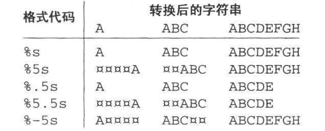
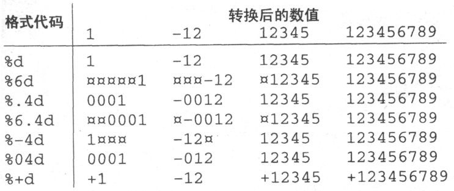
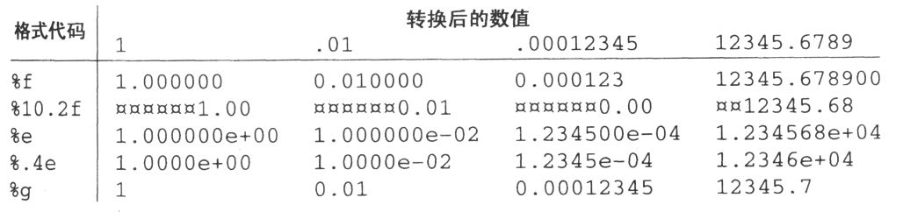
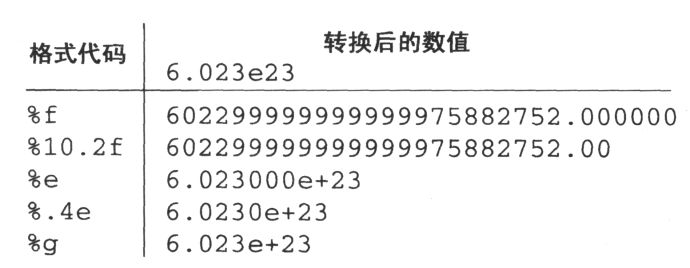
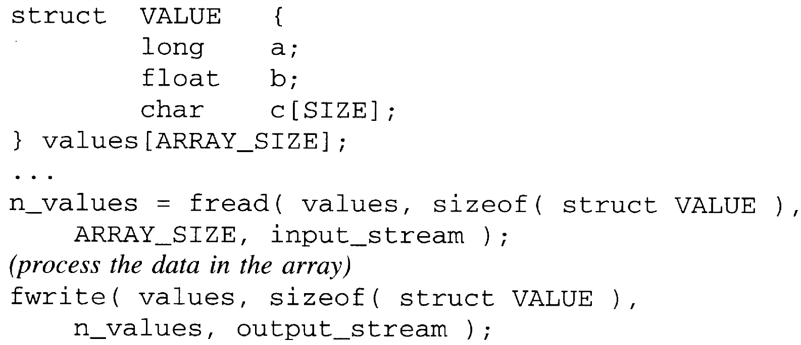

1.
What happens if the value returned from fopen is not checked for errors?
1.
What happens if the value returned from fopen is not checked for errors?One of the biggest advantages of ANSI C over earlier implementations is that the library is included in the specification. Every ANSI implementation will have the mandated set of functions, and they will have the required interface and work in the prescribed manner. This situation is a great improvement over the early days of C when different implementations "improved" the common library functions by modifying or extending their functionality. These changes may have been useful on the particular system for which they were made, but they inhibited portability because code that depended on the changes would fail on other implementations that lacked them (or had different changes).
ANSI implementations aren't prohibited from having additional functions in their libraries. However, the standard functions must operate as defined by the Standard. If you are concerned with portability, simply avoid any nonstandard functions.
This chapter covers ANSI C input and output (I/O). However, we begin with two very useful functions to report and react to errors.
The perror function reports errors in a simple, uniform way. Many of the functions in the ANSI C library call the operating system to perform some work, especially the I/O functions. Any time the operating system is asked to do something, there is the chance that it might fail. For instance, if a program attempts to read from a disk file that does not exist, there is not much the operating system can do except indicate that something went wrong. The library functions pass this indication to the user's program after saving a code in the external integer variable errno (defined in errno.h) to indicate exactly why the operation failed.
The perror function simplifies reporting these specific errors to the user. Its prototype from stdio.h is shown below.
void perror( char const *message );If message is not NULL and points to a nonempty string, the string is printed and is followed by a colon and a space. A message explaining the error code currently in errno is then printed.
TIP:
perrno's best feature is its ease of use. Good programming practice dictates that any operation that might result in an error should be checked afterwards to determine whether or not it succeeded. Even operations that are supposedly "guaranteed" to work should be checked, because sooner or later they will fail. The small amount of extra work needed to do this checking will be repaid to you many times over in saved debugging time. perror is illustrated in examples throughout this chapter.
Note that errno is set only when a library function fails. When the functions are successful, errno is not modified at all. This behavior means that errno cannot be tested to determine whether an error occurred. Instead, check errno only when the function that was called indicates that it failed.
Another useful function is exit, which is used to terminate the execution of a program. Its prototype, found in stdlib.h, is shown below.
void exit( int status );The status argument is returned to the operating system and is an indication of whether or not the program completed normally. This value is the same as the integer status returned by the main function. The predefined symbols EXIT_SUCCESS and EXIT_FAILURE indicate successful and unsuccessful termination, respectively. Other values may be used, but their meanings are implementation dependent.
This function is particularly useful when error conditions that prevent the program from continuing to execute are discovered. You will often follow calls to perror with a call to exit. Although terminating the program is not the right way to handle all errors, it is better than letting a doomed program continue to execute and abort later.
Note that this function never returns. When exit is finished, the program has disappeared, so there is nothing to return to.
The earliest implementations of K&R C had little in the way of library functions to support input and output. As a result, every programmer who wanted more sophisticated I/O functionality than that provided had to implement their own.
This situation was greatly improved by the Standard I/O Library, a collection of I/O functions that implemented much of the added functionality that programmers had been implementing on their own. This library expanded on existing functions, such as printf, creating different versions that could be used in a variety of situations. The library also introduced the notion of buffered I/O, which increases the efficiency of most programs.
There were two major drawbacks to this library. First, it was implemented on one specific type of machine without much consideration of other machines with different characteristics. This fact led to situations where code that worked fine on one machine could not he made to work on another solely because of architectural differences between the machines. The second drawback is directly related to the first. When implementors discovered these deficiencies, they attempted to fix them by modifying the library functions. As soon as they did so, though, the library was no longer "standard," and program portability was reduced.
The I/0 functions in the ANSI C library are direct descendents of those from the old Standard I/O Library except that the ANSI functions have been improved. Portability and completeness were key considerations in the design of the ANSI library. However, backward compatibility with existing programs was another consideration. Most of the differences between ANSI functions and their older counterparts are the additions that enhance portability or functionality.
One last comment on portability: These functions are the result of considerable evolution, but there are probably additional revisions that could make them even better. A major advantage to ANSI C is that any such changes will have to be implemented as different functions rather than modifications to the existing functions. Therefore, program portability will not suffer as it has in the past.
The include file stdio.h contains declarations relevant to the I/O portion of the ANSI library. Its name comes from the old Standard I/O Library. Although a few I/O functions may be used without including this file, most functions will require it.
Computers today have a large variety of devices on which I/O may be performed. CD- ROM drives, hard and floppy disk drives, network connections, communications ports, and video adapters are a few of the more common devices. Each device has different characteristics and operating protocols. The operating system takes care of the details of communicating with these different devices and provides a simpler, more uniform I/O interface to the programmer.
ANSI C abstracts the notion of I/O even further. As far as C programs are concerned, all I/O is simply a matter of moving bytes into or out of the program. This stream of bytes, not surprisingly, is called a stream. The program is only concerned with creating the correct bytes of data for output and interpreting the bytes of data that come in as input. Details of the specific I/O device are hidden from the programmer.
Most streams are fully buffered, which means that "reading" and "writing" actually copy data out of and into an area in memory called the buffer. Copying to and from memory is very fast. The buffer for an output stream is flushed (physically written) to the device or file only when it becomes full. Writing a full buffer is more efficient than writing the data in little bits and pieces as the program produces it. Similarly, input buffers are refilled when they become empty by reading the next large chunk of input from the device or file into the buffer.
This buffering could cause confusion with the standard input and standard output, so they are fully buffered only if the operating system can determine that they are not associated with interactive devices. Otherwise, their buffering state is implementation dependent. A common (but not universal) strategy is to tie the standard output to the standard input in such a way that the output buffer is flushed when input is requested. Then, any prompts or other output previously written to the output buffer will appear on the screen before the user must enter the input.
CAUTION!
Although this buffering is usually desirable, it can cause confusion when you are debugging your program. A common debugging strategy is to sprinkle calls to printf throughout the program to determine the specific area in which an error is occurring. However, the output from these calls is buffered and does not immediately show up on the screen. In fact if the program aborts, the buffered output may not be written at all, which leads the programmer to incorrect conclusions about where the error occurred. The solution to this problem is to always follow debugging printf's with a call to fflush, like this:
printf("something or other" );
fflush( stdout );fflush (described in more detail later in the chapter) forces the buffer to written immediately whether or not it is full.
There are two types of streams, text and binary. Text streams have certain characteristics that may vary from system to system. One of these is the maximum length of a text line. The Standard requires that this limit be at least 254 characters. Another is the manner in which text lines are terminated. For example, the convention for text files on MS-DOS systems is that each line is terminated with a carriage return character and a newline (also called a linefeed) character. However, UNIX systems use only a newline.
TIP
The Standard defines a text line to be zero or more characters followed by a terminating newline character. On systems where the external representation of a text line differs from this definition, the library functions take care of translating between the external and internal forms. On MS-DOS systems, for example, a newline is written as the carriage return/newline pair. On input, the carriage return character is discarded. The ability to manipulate text without regard to its external appearance simplifies the creation of portable programs.
The bytes in a binary stream, on the other hand, are written to the file or device exactly as the program wrote them and are delivered to the program exactly as they were read from the file or device. They are not changed in any manner. This type of stream is appropriate for nontextual data, but binary streams may also be used for text files if you do not want the I/O functions to modify the end-of-line characters.
One of the declarations contained in stdio.h is for the file structure. Not to be confused with a data file stored on a disk, a FILE is a data structure used to access a stream. If you have several different streams active at a time, each will have its own FILE associated with it. To perform some operation on a stream, you call the appropriate function and pass it the FILE associated with that stream.
The runtime environment must provide at least three streams to every ANSI C program—the standard input, the standard output, and the standard error. The names of these streams are stdin, stdout, and stderr, respectively, and they are simply pointers to FILE structures. The standard input is where input comes from by default, and the standard output is the default output device. The defaults depend on the implementation; often the standard input is a keyboard device and the standard output is a terminal or screen.
Many operating systems let the user change the standard input and output from their default devices when a program is executed. For example, MS-DOS and UNIX systems both support input/output redirection using this notation:
$ program < data > answerWhen this program executes, it will read its standard input from the file data instead of the keyboard, and it will write its standard output to the file answer instead of the screen. Refer to your system's documentation for details on how (or whether) I/O redirection is performed.
The standard error is the place where error messages are written. perror writes its output here. On many systems the standard error and the standard output default to the same location, but having a separate stream for error messages means that they will still appear on the screen or other default output device even if the standard output has been redirected somewhere else.
There are numerous constants defined in stdio.h that are related in some way to input and output. EOF, which you have already seen, is the value returned by many functions to indicate that end of file has been reached. The actual value chosen for EOF uses more bits than a character in order to prevent binary character values from mistakenly being interpreted as EOF.
How many files can a program nave open at once? It depends on the implementation, but you are guaranteed of being able to simultaneously open at least FOPEN_MAX files. This constant, which includes the three standard streams, must be at least eight.
The constant FILENAME_MAX is an integer that indicates how large a character array should be to hold the longest legal file name that the implementation supports. If there isn't a practical limit to the length of a file name, then this value is the recommended size for such strings. The remaining constants are described later in this chapter along with the functions with which they are used.
The standard library functions make it very convenient to perform I/O to and from files in C programs. Here is a general overview of file I/O.
1. The program declares a pointer variable of type FILE * for each file that must be simultaneously active. This variable will point to the FILE structure used by the stream while it is active.
2. The stream is opened by calling the fopen function. To open a stream, you must specify which file or device is to be accessed and how it is to be accessed (for example, reading, writing, or both). fopen and the operating system verify that the file or device exists (and, on some operating systems, that you have permission to access it in the manner you specify) and initializes the FILE structure.
3. The file is then read and/or written as desired.
4. Finally, the stream is closed with the fclose function. Closing a stream prevents the associated file from being accessed again, guarantees that any data stored in the stream buffer is correctly written to the file, and releases the FILE structure so that it can be used again with another file.
I/O on the standard streams is simpler because they do not have to be opened or closed.
The I/O functions deal with data in three basic forms: individual characters, text lines, and binary data. A different set of functions is used to process each form. Table 15.1 lists the function or function family used for each form of I/O. Function families, listed in the table in italic, are groups of functions whose members each perform the same basic work in a slightly different way. The functions differ in where the input is obtained or where the output goes. The variants are to perform the work:
Table 15.1 Functions to perform character, line, and binary I/O
Nombre de la función o apellido de la función
|
tipo de datos |
ingresar |
Producción |
describir |
|---|---|---|---|
|
personaje |
getchar |
putchar |
Leer (escribir) un solo carácter |
|
Línea de texto |
obtiene |
pone |
Entrada (salida) sin formato de línea de texto entrada (salida) formateada |
|
Datos binarios |
fread |
escribir |
Leer (escribir) datos binarios |
1. only with stdin or stdout,
2. with a stream given as an argument,
3. using character strings in memory rather than streams.
The functions that require a stream argument will accept stdin or stdout as arguments. Some families do not have functions for the string variants, because it is so easy to accomplish the same result with other statements or functions. Table 15.2 lists the functions in each family. The individual functions are described later in this chapter.
Table 15.2 Input/output function families
|
Apellido |
Objetivo |
Se puede usar para todas las transmisiones. |
Solo se usa para stdin y stdout |
Cadena en memoria |
|---|---|---|---|---|
|
getchar |
Entrada de caracteres |
fgetc, getc |
getchar |
① |
|
putchar |
Salida de caracteres |
fputc, putc |
putchar |
① |
|
obtiene |
Entrada de línea de texto |
fgets |
obtiene |
② |
|
pone |
Salida de línea de texto |
fputs |
pone |
② |
|
scanf |
Entrada formateada |
fscanf |
scanf |
sscanf |
|
printf |
Salida formateada |
fprintf |
printf |
sprintf |
① Use a subscript or indirection on a pointer to get/put single characters to/from memory,
② Use strcpy to get/put lines to/from memory.
The fopen function opens a specific file and associates a stream with the file. Its prototype is shown below.
FILE *fopen( char const *name, char const *mode );The arguments are both strings. name is the name of the file or device that you wish to open. The rules for constructing filenames vary from system to system, which is why fopen takes the filename in one string rather than in separate arguments for path name, drive letter, file extension, and so forth. This argument specifies the file to open—the name of the FILE * variable that the program uses to save the value returned by fopen does not influence which file is opened.
The mode argument indicates whether the stream will be used for input, output, or both and whether the stream will be text or binary. The modes used most frequently are shown in the following table.
|
Leer |
Escribir |
añadir |
|
|---|---|---|---|
|
texto |
"R" |
"W" |
"A" |
|
Binario |
"Rb" |
"Wb" |
"Ab" |
The modes begin with r, w, or a to indicate that the stream is to be opened for reading, writing, or appending, respectively. A file opened for reading must already exist, whereas a file opened for writing is truncated if it already exists and created if it does not. If a file opened for appending does not exist, it will be created; if it already exists, it is not truncated. In either case, data can only be written to the end of the file.
Adding a + to the mode opens the file for update, and both reading and writing are allowed on the stream. However, if you have been reading from the file, you must call one of the file positioning functions (fseek, fsetpos, and rewind, which are described later in this chapter) before you may begin writing to it. After writing to the file, you must call either fflush or one of the file positioning functions before you may begin reading from it.
If it is successful, fopen returns a pointer to the FILE structure for the newly created stream. Otherwise a NULL pointer is returned and errno will indicate the nature of the problem.
CAUTION!
Always check the value returned by fopen! If the function fails, a NULL value is returned. If the program does not check for errors, the NULL pointer will be given to subsequent I/O functions. They will perform indirection on it and fail. The following example illustrates the use of fopen.
First, the fopen function is called; the file to be opened is named data3 and it is to be opened for reading. This step is followed by the all-important check to see whether the open succeeded. If it did not, the error is reported to the user and the program terminates. The exact output produced by this call to perror will vary depending on the operating system in use, but it might look something like this:
data3: No such file or directoryThis type of message clearly indicates to the user that something has gone wrong and gives the user a good indication of what the problem is. It is especially important to report these errors in programs which read filenames or take them from the command line. Whenever the user enters a filename, there is the possibility that they may make a mistake. Clear, descriptive error messages help the user determine what went wrong and bow to fix it.
The freopen function is used to open (or reopen) a specific stream on a file. Its prototype is:
FILE *freopen( char const *filename, char const *mode, FILE *stream );The last argument is the stream to be opened. It may be a stream that was previously returned by fopen, or it maybe one of the standard stream stdin, stdout, or stderr.
The function first attempts to close the stream. It then opens the stream with the given file name and mode. If the open fails, the value NULL is returned, otherwise the third argument value is returned.
Streams are closed with the fclose function, which has this prototype:
int fclose( FILE *f );For output streams, fclose flushes the buffer before the file is closed. fclose return zero if it successful and EOF otherwise.
Program 15.1 interprets its command line arguments as a list of filenames. It opens each file and processes them, one by one. If any file cannot be opened, an error message that includes the name of the file is printed, and the program continues to the next name in the list. The exit status is based on whether any errors occurred.
I said earlier that any operation that might fail should be checked to see whether or not it succeeded. In this program, the value returned by fclose is checked to see if anything went wrong. Many programmers do not bother with this test, arguing that there is no reason why the close will fail to work. Furthermore, they're finished with the file, so it doesn't matter even if it did fail. However, this analysis is not entirely correct.
/*
** Process each of the files whose names appear on the command line.
*/
#include <stdlib.h>
#include <stdio.h>
int
main( int ac, char **av )
{
int exit_status = EXIT_SUCCESS;
FILE *input;
/*
** While there are more names ...
*/
while( *++av != NULL ){
/*
** Try opening the file.
*/
input = fopen( *av, "r" );
if( input == NULL ){
perror( *av );
exit_status = EXIT_FAILURE;
continue;
}
/*
** Process the file here ...
*/
/*
** Close the file (don't expect any errors here).
*/
if( fclose( input ) != 0 ){
perror( "fclose" );
exit( EXIT_FAILURE );
}
}
return exit_status;
}Program 15.1 Opening and closing files
open_cls.c
The input variable might have changed because of a program bug between the fopen and the fclose. This bug would certainly cause a failure. In programs that do not check the result of an fopen, input might even be NULL. Either of these conditions will cause the fclose to fail. But if either of these conditions existed, the I/O would have failed as well, and the program probably would have terminated long before fclose was called.
So should you check fclose (or any other operation, for that matter) for errors or not? When making this decision, ask yourself two questions.
1. What should be done if the operation succeeded?
2. What should be done if the operation failed?
If the answers to these questions are different, then you should check for the error. It is reasonable to skip the error checking only in cases where both questions have the same answer.
After a stream is open, it can be used for input and output. The simplest form is character I/O. Character input is performed by the getchar family of functions, whose prototypes are shown below.
The desired stream is given as the argument to getc and fgetc, but getchar always reads from the standard input. Each function reads the next character from the stream and returns it as the value of the function. If there aren't any more characters on the stream, the constant EOF is returned instead.
These functions are supposed to read characters, yet they all return an int rather than a char. Although codes that represent characters are just small integers, the real reason for returning an int is to allow the functions to report end of file. If a char were returned, then one of the 256 character values would have to be chosen to designate end of file. If this character appeared in a file, it would be impossible to read beyond its position because the character would seem to signal the end of the file.
Having the functions return an int solves the problem. EOF is defined as an integer whose value is outside of the range of possible character values. This solution lets us use these functions to read binary files, where all characters may occur, as well as text files.
To write individual characters to a stream, functions in the putchar family are used. Their prototypes are:
The first argument is the character to be printed. The functions truncate the integer argument to an unsigned character before printing, so
putchar('abc' );only prints one character (which one is implementation dependent).
These functions return the value EOF if they fail for any reason, such as writing to a stream that has been closed.
fgetc and fputc are true functions, but getc, putc, getchar, and putchar are #define'd macros. The macros are slightly more efficient in terms of execution time, and the functions will be more efficient in terms of program size. Having both types available allows you to choose the right one depending on whether size or speed is more important. This distinction is rarely a matter of great concern, because the differences observed in actual programs using one or the other are usually not significant.
You cannot tell what the next character on a stream will be until you've read it. Thus, you will occasionally read one character beyond what you wanted. For example, suppose you must read a sequence of digits from a stream one by one. Because you cannot see what the next character will be without reading it, you must keep reading until you get a nondigit. But what do you do with the extra character to avoid losing it?
The ungetc function solves this type of problem. Here is its prototype.
int ungetc( int character, FILE *stream );ungetc return a character previously read back to the stream so that it can be read again later. Program 15.2 illustrates ungetc. It reads characters from the standard input and converts them to an integer. Without an ungetc capability, this function would have to return the excess character to the caller, who would then be responsible for sending it to whatever part of the program reads the next character. The special cases and extra logic involved in handling the extra character make the program significantly more complex.
/*
** Convert a series of digits from the standard input to an integer.
*/
#include <stdio.h>
#include <ctype.h>
int
read_int()
{
int value;
int ch;
value = 0;
/*
** Convert digits from the standard input; stop when we get a
** character that is not a digit.
*/
while( ( ch = getchar() ) != EOF && isdigit( ch ) ){
value *= 10;
value += ch - '0';
}
/*
** Push back the nondigit so we don't lose it.
*/
ungetc( ch, stdin );
return value;
}Programa 15.2 Converting characters to an integer
char_int.c
Each stream allows at least one character to be pushed back (ungotten). If more characters are pushed back on a stream that allows it, they will be read in the opposite order that they were pushed. Note that pushing characters back to a stream is not the same as writing to the stream. The external storage associated with a stream is not affected by an ungetc.
CAUTION!
"Ungotten" characters are associated with the current position in the stream, so changing the stream's position with fseek, fsetpos, or rewind discards any ungotten characters.
Line oriented I/O can be performed in one of two ways—unformatted or formatted. Both forms manipulate character strings. The difference is that unformatted I/O simply reads or writes strings, whereas formatted I/O performs conversions between internal and external representations of numeric and other variables. In this section, we'll look at unformatted line I/O.
The gets and puts families operate on character strings rather than individual characters. This characteristic makes them useful in programs that deal with textual input on a line-by-line basis. The prototypes for these functions are shown below.
fgets reads characters from the specified stream and copies them into the buffer. Reading stops after a newline character has been read and stored in the buffer. It also stops after buffer_size – 1 characters have been stored in the buffer. Data is not lost in this case, because the next call to fgets will get the next characters from the stream. In either case, a NUL byte is appended to the end of whatever was stored in the buffer, thus making it a string.
If end of file is reached before any characters have been read, the buffer is unchanged and fgets returns a NULL pointer. Other wise, fgests returns its first argument (the pointer to the buffer). The returned value is usually used only to check for end of file.
The buffer passed lo fputs must contain a string; its characters are written to the stream. The string is expected to be NUL-terminated, which is why there isn't a buffer size argument. The string is written verbatim: if it does not contain a newline, none is written; if it contains several newlines, they are all written. Thus, whereas fgets tries to read one whole line, fputs can write a part of a line, a whole line, or several lines. If an error occurred while writing, fputs returns the constants EOF; otherwise it returns a non-negative value.
Program 15.3 is a function that reads lines of input from one file and writes them unchanged to another file. The constant MAX_LINE_LENGTH determines the size of the buffer, and therefore the size of the longest line that will be read. In this function the value has little significance because the resulting file will be the same whether long lines are written ail at once or piece by piece. On the other hand, if the function were to count the number of lines that are copied, a too small buffer would produce an incorrect count because long lines would be read in two or more chunks. We could fix this problem by adding code to see if each chunk ended with a newline.
The correct value for the buffer size is usually a compromise that depends on the nature of the processing required. However, fgets will never cause errors by overflowing its buffer.
CAUTION!
Note that fgets cannot read into a buffer whose size is less than two, because one space in the buffer is reserved for the NUL byte that will be added
The gets and puts functions are almost identical to fgets and fputs. The differences allow backward compatibility. The major functional difference is that when gets reads a line of input, it does not store the terminating new-line in the buffer. When puts writes a string, it adds a newline to the output after the string is written.
CAUTION!
Another difference pertains only to gets and is obvious from the function prototypes: there is no buffer size argument. Thus gets cannot determine the length of the buffer. If a long input line is read into a short buffer, the excess characters are written in whatever memory locations follow the buffer, thus destroying the values of one or more unrelated variables. This characteristic makes gets suitable for only the most trivial of programs, because the only way to guard against overflowing the input buffer is to declare a huge one. But no matter how large it is, there is always the possibility that the next line of input will be larger, especially when the standard input has been redirected to a file.
/*
** Copy the standard input to the standard output, line by line.
*/
#include <stdio.h>
#define MAX_LINE_LENGTH 1024 /* longest line I can copy */
void
copylines( FILE *input, FILE *output )
{
char buffer[MAX_LINE_LENGTH];
while( fgets( buffer, MAX_LINE_LENGTH, input ) != NULL )
fputs( buffer, output );
}Program 15.3 Copy lines from one file to another
copyline.c
The name "formatted line I/O" is something of a misnomer, because the functions in the scanf and printf families are not limited to single lines. They can perform I/O on partial lines and multiple lines as well.
The prototypes for the scanf family are shown below. The ellipsis in each prototype represents a variable-length list of pointers. The values converted from the input are stored one by one into the locations to which these arguments point.
These functions all read characters from an input source and convert them according to the codes given in the format string. The input source for fscanf is the stream given as an argument, scanf reads from the standard input, and sscanf takes input characters from the character string given as the first argument.
Input stops when the end of the format string is reached or input is read that does not match what the format suing specifies. In either case, the number of input values that were converted is returned as the function value. If end of file is encountered before any input values have been converted, the function returns the constant EOF.
CAUTION!
For these functions to work properly, the pointer arguments must be the right type for the corresponding format codes. The functions cannot verify whether their pointer arguments are the correct types, so they assume that they are and go ahead and use chem. If the pointer types are incorrect, the resulting values will be garbage, and adjacent variables may be overwritten in the process.
CAUTION!
By now the purpose of the ampersands before the arguments to the scanf functions should be clear. Because of C's call-by-value argument passing mechanism, the only way to identify a location as a function argument is to pass a pointer to it. A very common error is to forget the ampersand. This omission causes the value of the variable to be passed as the argument, which scanf (or either of the other two) interprets as if it were a pointer. When it is de-referenced, either the program aborts or data in an unexpected location is overwritten.
The format string may contain any of the following:
The format codes for the scanf functions all begin with a percent sign, followed by (1) an optional asterisk, (2) an optional width, (3) an optional qualifier, and (4) the format code. The asterisk causes the converted value to be discarded rather than stored. This technique is one way to skip past unneeded input. The width is given as a non- negative integer. It limits the number of input characters that will be read in order to convert this value. If a width isn't given, characters are read until the next whitespace character is found in the input. The qualifiers modify the meanings of certain format codes, and are listed in Table 15.3.
Table 15.3 scanf qualifiers
Result when used with qualifier
|
Format code |
h |
l |
L |
|---|---|---|---|
|
d, yo, n |
short |
long |
|
|
o, u, x |
unsigned short |
unsigned long |
|
|
e, f, g |
double |
long double |
CAUTION!
The purpose of the qualifier is to specify the size of the argument. Omitting the qualifier when an integer argument is shorter or longer than the default integer is a common mistake. The same is true with the floating-point types. Depending on the relative sizes of these types, omitting the qualifier may result in long variables that are only half initialized or variables adjacent to short ones being overwritten.
insinuación:
On a machine whose default integer is the same size as a short, the h qualifier is not needed when converting a short. However, the qualifier is needed on a machine whose default integer size is longer than a short. Thus, your programs will be more portable if you use the appropriate qualifier when converting all short and long integers, and all long double variables.
The format code is a single character that specifies how the input characters are to be interpreted. Table 15.4 describes the codes.
Let's look at some examples that use the scanf functions. Once again, only the parts relevant to these functions are shown. Our first example is straightforward. It reads pairs of numbers from an input stream and does some processing on them. When end of tile is reached, the loop breaks.
This code is rather unsophisticated because any illegal characters in the input stream also break the loop. Also, because fscanf skips over white space, there is no way to verify whether the two values were both on the same line or on different input lines. A technique to solve this problem is shown in a later example.
The next example uses a field width.
nfields = fscanf( input, "%4d %4d %4d", &a, &b, &c )The widths restrict each of the integer values to be four or fewer digits long. With this input,
1 2a would become one and b would become two. c would be unchanged, and nfields would be two. But with this input,
12345 67890a would be 1234, b would be five, c would be 6789, and nfields would be three. The final zero would remain unread in the input
It is difficult to maintain synchronization with line boundaries in the input when using fscanf, because it skips newlines as white space. For example, suppose that a program reads input that consists of groups of four values. These values are then processed in some way, and the next four values are read. The simplest way to prepare input for such a program is to put each set of four values on its own input line, making it easy to see which values form a set. But if one of the lines contains too many or too few values, the program becomes confused. For example, consider this input, which contains an error in its second line:
If we used fscanf to read the values four at a time, the first and second sets of values would be correct, but the third set of values would be read as 2, 3, 3, 3. Each subsequent set would also be incorrect.
Table 15.4 scanf format codes
|
Código |
parámetro |
sentido |
|---|---|---|
|
C |
char * |
Leer y almacenar caracteres individuales. Los primeros caracteres en blanco no se saltan. Si se da el ancho, este número de caracteres se lee y almacena. No se agregará ningún byte NUL después del carácter. El parámetro debe apuntar a una matriz de caracteres suficientemente grande |
|
identificación |
En t * |
Se convierte un entero con signo opcional. d Interprete la entrada como un número decimal; i determina la base del valor de acuerdo con su primer carácter, al igual que la representación de una constante literal entera |
|
uox |
sin firmar * |
Un entero con signo opcional se convierte, pero se almacena como un número sin signo. Si usa u, el valor se interpreta como un número decimal; si usa o, el valor se interpreta como un número octal; si usa x, el valor se interpreta como un número hexadecimal. X y x son sinónimos |
|
efg |
flotar * |
Espere un valor de punto flotante. Su forma debe ser como una constante literal de coma flotante, pero la coma decimal no es necesaria. E y G son sinónimos de e y g respectivamente |
|
s |
char * |
Lea una cadena de caracteres que no estén en blanco. El parámetro debe apuntar a una matriz de caracteres suficientemente grande. Cuando se encuentra un espacio en blanco, la entrada se detendrá y el terminador NUL se agregará automáticamente después de la cadena. |
|
[xxx] |
char * |
Lea una cadena de caracteres de la entrada de acuerdo con la combinación de caracteres dada. El parámetro debe apuntar a una matriz de caracteres suficientemente grande. Cuando se encuentra el primer carácter que no aparece en la combinación dada, la entrada se detiene. El terminador NUL se agrega automáticamente después de la cadena. El código% [abc] indica que la combinación de caracteres incluye a, by c. Si la lista comienza con un carácter ^, significa que la combinación de caracteres es el complemento de los caracteres enumerados, por lo que% [^ abc] significa que la combinación de caracteres está formada por todos los caracteres excepto a, by c. El corchete derecho también puede aparecer en la lista de caracteres, pero debe ser el primer carácter de la lista. En cuanto a si la barra horizontal se usa para especificar un cierto rango de caracteres (como% [az]), depende del compilador |
|
pag |
vacío * |
Se espera que la entrada sea una cadena de caracteres, como los producidos por el código de formato% p de la función printf. Su método de conversión difiere según el compilador, pero el resultado de la conversión será el mismo que el valor de carácter producido por la impresión como se describe anteriormente. |
|
norte |
En t * |
Se devuelve el número de caracteres leídos desde la entrada hasta el momento a través de esta llamada a la función scanf. Los caracteres convertidos por% n no se cuentan en el valor de retorno de la función scanf. No consume ningún insumo por sí solo. |
|
% |
(sin) |
Este código coincide con un% en la entrada, el símbolo% se descartará |
Program 15.4 uses a more reliable approach for reading this type of input. The advantage of this method is that the input is now processed line by line. It is impossible to read a set of values that begins on one line and ends on the next. Furthermore, by trying to convert five values, input lines that have too many values are detected as well as those with too few.
/*
** Line-oriented input processing with sscanf
*/
#include <stdio.h>
#define BUFFER_SIZE 100 /* Longest line we'll handle */
void
function( FILE *input )
{
int a, b, c, d, e;
char buffer[ BUFFER_SIZE ];
while( fgets( buffer, BUFFER_SIZE, input ) != NULL ){
if( sscanf( buffer, "%d %d %d %d %d",
&a, &b, &c, &d, &e ) != 4 ){
fprintf( stderr, "Bad input skipped: %s",
buffer );
continue;
}
/*
** Process this set of input.
*/
}
}Program 15.4 Processing line-oriented input with sscanf
scanf1.c
A related technique is used to read line-oriented input that may be in several different formats. A line is read with fgets and then scanned with several sscanf's, each using a different format. The format of the input line is determined by the first sscanf that converts the expected number of values. For instance, Program 15.5 examines the contents of a buffer that was read earlier. It extracts either one, two, or three values from a line of input and assigns default values to variables for which an input value was not given.
/*
** Variable format input processing with sscanf
*/
#include <stdio.h>
#include <stdlib.h>
#define DEFAULT_A 1 /* or whatever ... */
#define DEFAULT_B 2 /* or whatever ... */
void
function( char *buffer )
{
int a, b, c;
/*
** See if all three values are given.
*/
if( sscanf( buffer, "%d %d %d", &a, &b, &c ) != 3 ){
/*
** No, use default value for a, see if other two
** values are both given.
*/
a = DEFAULT_A;
if( sscanf( buffer, "%d %d", &b, &c ) != 2 ){
/*
** Use default value for b too, look for
** remaining value.
*/
b = DEFAULT_B;
if( sscanf( buffer, "%d", &c ) != 1 ){
fprintf( stderr, "Bad input: %s",
buffer );
exit( EXIT_FAILURE );
}
}
}
/*
** Process the values a, b, and c.
*/
}Program 15.5 Processing variable format input with sscanf
scanf2.c
La familia de funciones printf se utiliza para crear una salida formateada. Hay 3 funciones en esta familia: fprintf, printf y sprintf. Sus prototipos se muestran a continuación.
As you saw in Chapter 1, printf formats the values in its argument list according to the format codes and other characters in the format argument. The other members of this family work the same way. With printf, the resulting output goes to the standard output. With fprintf, any output stream can be used, and sprintf writes its results as a NUL-terminated string in the specified buffer rather than to a stream.
CAUTION!
sprintf is a potential source of error. The buffer size is not an argument to sprintf, so output that is unexpectedly long can spill out of the end of the buffer and overwrite whatever happens to follow the buffer in memory. There are two strategies for making sure that this problem never happens. The first is to declare a very large buffer. But this solution wastes memory, and although a large buffer reduces the chance of overflow, it does not eliminate it. The second approach is to analyze the format to see how long the resulting output would be when the largest possible values are converted. For example, the largest integer on a machine with 4-byte integers is 11 characters including a sign, so the buffer should always be at least 12 characters in order to hold the value and the terminating NUL byte. There isn't a limit on the length of strings, but the number of characters printed for a string can be restricted with an optional field in the format code.
CAUTION!
The format codes used with the printf family work differently than those used with the scanf functions, so you must be careful not to intermix them. This problem is made more difficult by the fact that some of the format codes look identical without their optional fields. Unfortunately, many of the commonly used codes, such as %d, fall into this category.
CAUTION!
Another source of error is having arguments whose types do not match the corresponding format codes. Usually the result of this error is garbage in the output, but it is possible for such a mismatch to cause the program to abort. As in the scanf family, these functions cannot verify that a value has the proper type for a format code, so it is up to you to make sure they match properly.
The format string may contain formatting codes, which cause the next value from the argument list to be formatted in the specified manner, and other characters, which are printed verbatim. Format codes consist of a percent sign followed by (1) zero or more flag characters that modify how some conversions are performed, (2) an optional minimum field width. (3) an optional precision, (4) an optional modifier, and (5) the conversion type.
The precise meanings of the flags and other fields depend on which conversion is used. Table 15.5 describes the conversion type codes, and Table 15.6 describes the flag characters and their meanings.
Table 15.5 printf format codes
|
Code |
Argument |
Meaning |
|---|---|---|
|
C |
En t |
The argument is truncated to unsigned char and printed as a character. |
|
di |
En t |
The argument is printed as a decimal integer. If a precision is given and the i value has fewer digits, zeros are added at the front. |
|
uox, X |
unsigned int |
The argument is printed as an unsigned value in decimal (u), octal (o), or o int hexadecimal (x or X). x and X are identical except that abcdef are used for x conversions, and ABCDEF are used with X. |
|
eE |
double |
The argument is printed in exponent form; for example, 6.023000e23 for the e code, and 6.023000E23 for the E code. The number of digits behind the decimal point is determined by the precision field; the default is six digits. |
|
F |
double |
The argument is printed in conventional notation. The precision determines the number of digits behind the decimal point; the default is six. |
|
gG |
double |
The argument is printed in either %f or %e (or %E, if G is given) notation, G depending on its value. The %f form is used if the exponent is greater than or equal to –4 but less than the precision. Otherwise the exponent form is used. |
|
s |
char * |
Imprimir una cadena |
|
pag |
vacío * |
The value of the pointer is converted to an implementation-dependent sequence of printable characters. This code is used primarily in conjunction with the %p code in scanf. |
|
norte |
En t * |
This code is unique in that it does not produce any output. Instead, the number of characters of output produced so far is stored in the corresponding argument. |
|
% |
(sin) |
Imprimir un carácter% |
Table 15.6 printf format flags
|
Firmar |
Meaning |
|---|---|
|
- |
Left justify the value in its field. The default is to right justify. |
|
0 |
When right justifying numeric values, the default is to use spaces to fill unused columns to the left of the value. This flag causes zeros to be used instead, and it applies to the d, i, u, o, x, X, e, E, f, g, and G codes. With the d, i, u, o, x, and X codes, the zero flag is ignored if a precision is given. The zero flag has no effect if the minus flag is also given. |
|
+ |
When used with a code that formats a signed value, this forces a plus sign to appear when the value is not negative. If the value is negative, a minus sign is shown as usual. By default, plus signs are not shown. |
|
space |
Useful only for codes that convert signed values, this flag causes a space to be added to the beginning of the result when the value is not negative. Note that this flag and + are mutually exclusive; if both are given the space flag is ignored. |
|
# |
Selects an alternate form of conversion for some codes. These are described in Table 15.8. |
The field width is a decimal integer specifying the minimum number of characters that will appear in the result. If a value has fewer characters than the field width, padding occurs to increase its length. The flags determine whether padding is done with spaces or zeros and whether it occurs on the left or file right end of the value.
For d, i, u, o, x, and X conversions, the precision specifies the minimum number of digits that will appear in the result and overrides the zero flag. If the converted value has fewer digits, leading zeros are inserted. Digits are not produced if the value zero is converted with a precision of zero. For e, E, and f conversions, the precision determines the number of digits that will appear after the decimal point. For g and G conversions, it specifies the maximum number of significant digits that will appear. When used with s conversions, the precision specifies the maximum number of characters that will be converted. The precision is given as a period followed by an optional decimal integer. If the integer is missing a precision of zero is used.
If an asterisk is given in place of a decimal integer for the field width and/or precision, then the next argument to printf (which must be an integer) supplies the width and/or precision. Thus, either of these values may be computed rather than specified in advance.
When character or short integer values are given as arguments to printf, they are converted to integers before being passed. Sometimes the conversion can affect the output that is produced. Also, when passing a long integer as an argument in an environment where long integers occupy more memory than ordinary integers, printf must be told that the argument is a long. The modifiers, shown in Table 15.7, solve these problems by indicating the exact size of integer and floating-point arguments.
Tabla 15.7 Modificador de código de formato Printf
|
Modificador |
Cuando se usa para |
Indica que el parámetro es ... |
|---|---|---|
|
h |
d, yo, u, o, x, X |
Un entero corto (posiblemente sin firmar) |
|
h |
norte |
Un puntero a un número entero corto |
|
l |
d, yo, u, o, x, X |
Un entero largo (posiblemente sin firmar) |
|
l |
norte |
Un puntero a un entero largo |
|
L |
e, E, f, g, G |
Un valor doble largo |
On implementations in which ints and short ints are the same length, the h modifier has no effect. Otherwise, the value to be converted will have been promoted to an (unsigned) integer when it was passed as an argument; this modifier causes it to be truncated back to its short form before the conversion takes place. With decimal conversions, the truncation is generally not needed. But with some octal or hexadecimal conversions, the h modifier will ensure that the proper number of digits is printed.
CAUTION!
On implementations in which ints and long ints are the same length, the l modifier has no effect. On all other implementations, the l modifier is required, because long integers on such machines are passed in two parts on the runtime stack. If the modifier is not given, only the first part is retrieved for the conversion. Not only will this conversion produce incorrect results, but the second part of the value is then interpreted as a separate argument, disrupting the correspondence between the subsequent arguments and their format codes.
El signo # se puede utilizar para varios códigos de formato printf para elegir una forma alternativa de conversión. Los detalles de estos formularios se enumeran en la Tabla 15.8.
Tabla 15.8 Otras formas de conversión de printf
|
Used With... |
The # Flag... |
|---|---|
|
o |
guarantees that the value produced begins with a zero. |
|
x, X |
prefixes a nonzero value with 0x (0X for the %X code). |
|
e, E, f |
ensures the result always contains a decimal point, even if no digits follow it. |
|
g, G |
does the same as for the e, E, and f codes above; in addition, trailing zeros are not removed from the fraction. |
TIP
Because some implementations require the l modifier when printing long integer values and others do not, it is better to use it whenever printing longs. Then you can port the program to either type of implementation with fewer modifications.
The abundance of codes, modifiers, qualifiers, alternate forms, and optional fields that can be used with printf can be overwhelming, but they provide great flexibility in formatting your output. Be patient, it takes time to learn them all! Here are some examples to get you started.
Figure 15.1 shows some of the possible variations in formatting of strings. Only the characters shown are printed. To avoid ambiguity, the symbol ¤ is used to denote a blank space. Figure 15.2 shows the results of formatting several integer values with various integer formats. Figure 15.3 shows some of the ways that floating-point values can be formatted. Finally, Figure 15.4 shows the results of formatting a much larger floating-point number with the same format codes as the previous figure. The apparent error in the first two outputs occurs because more significant digits are being printed than can be stored in memory.

Figura 15.1 Usar cadena de formato printf

Figura 15.2 Formateo de enteros con printf

Figura 15.3 Uso de printf para formatear valores de punto flotante

Figure 15.4 Formatting large floating-point values with printf
The most efficient way of writing data to a file is to write it in binary. Binary output avoids the overhead and loss of precision involved with converting numeric values to character strings. But binary data is not readable by human beings, so this technique is useful only for data that will be subsequently read by another program.
The fread function is used to read binary data; fwrite is used to write it. Their prototypes look like this:
size_t fread( void *buffer, size_t size, size_t count, FILE *stream );
size_t fwrite( void *buffer, size_t size, size_t count, FILE *stream );buffer is a pointer to the area that holds the data. size is the number of bytes in each element of the buffer, count is the number of elements to be read or written, and of course stream is the stream with which to read or write the data.
The buffer is interpreted as an array of one or more values. The count argument specifies how many values are in the array, so to read or write a scalar, use a count of one. The functions return the number of elements (not bytes) actually read or written. This number may be smaller than the requested number of elements if end of file was reached on input or an error occurred on output.
Let's look at a code fragment that uses these functions.

This program reads binary data from an input file, performs some type of processing on it, and writes the result to an output file. As mentioned, this type of I/O is efficient because the bits in each value are written (or read) to (or from) the stream without any conversions. For example, suppose one of the long integer values in the array had the value 4,023,817. The bits that represent this value are 0x003d6609—these bits would be written to the stream. Binary information is not readable by human beings because the bits do not correspond to any reasonable characters. If interpreted as characters, this value is 0=ft, which certainly does not convey the value of the number very well to us.
There are a few additional functions that are useful when dealing with streams. The first is fflush, which forces the buffer for an output stream to be physically written even if it is not yet full. Its prototype is:
int fflush( FILE *stream );This function should be called whenever it is important for buffered output to be physically written immediately. For example, calling fflush guarantees that debugging information is physically printed instead of held in the buffer until a later time.
Normally, data is written to a file sequentially, which means that data written later appears in the file after any data written earlier. C also supports random access I/O in which different locations of the file can be accessed in any order. Random access is accomplished by seeking to the desired position in the file before reading or writing. There are two functions that perform this operation, and their prototypes are:
long ftell( FILE *stream );
int fseek( FILE *stream, long offset, int from );The ftell function returns the current position in the stream, that is, the offset from the beginning of the file at which the next read or write would begin. This function lets you save the current position in a file so that you can return to it later. On binary streams the value will be the number of bytes the current position is from the beginning of the file.
On text streams, the value represent a position, but it may not accurately represent the number of characters from the beginning of the file because of the end- of-line character translations performed on text streams by some systems. However, the value returned by ftell may always be used as an offset from the beginning of the file with fseek.
fseek allows you to seek on a stream. This operation changes the position at which the next read or write will occur. The first argument is the stream to change. The second and third arguments identify the desired location in the file. Table 15.9 describes three ways that the second and third arguments can be used.
It is an error to attempt to seek before the beginning of a file. Seeking beyond the end of the file and writing extends the file. Seeking beyond the end reading causes an end-of-file indication to be returned. On binary, streams, seeks from SEEK_END may not be supported and should therefore be avoided. On text streams, the offset must be zero if from is either SEEK_CUR or SEEK_END. The offset must be a value previously returned from a call to ftell on the same stream if from is SEEK_SET.
Table 15.9 fseek arguments
|
If from is ... |
Then you will seek to ... |
|---|---|
|
SEEK_SET |
offset bytes from the beginning of the stream; offset must be non-negative. |
|
SEEK_CUR |
offset bytes from the current location in the stream; offset may be positive or negative. |
|
SEEK_END |
offset bytes from the end of the file; offset may be positive or negative, positive values seek beyond the end of the file. |
Part of the reason for these restrictions is the end-of-line character mapping performed on text streams. Because of the mapping, the number of bytes in the text file may be different than the number of bytes the program wrote. Thus, a portable program cannot seek to a position in a text stream using the result of a computation based on the number of characters written.
There are three side effects of changing a stream's position with fseek. First, the end-of-file indicator is cleared. Second, if a character had been returned to the stream with ungetc prior to an fseek, the ungotten character is forgotten because after the seek it is no longer the next character. Finally, seeking lets you switch from reading to writing and back on streams opened for update.
Program 15.6 uses fseek to access a file of student information. The record number argument is a size_t because it doesn't make sense for it to be negative. The desired location in the file is computed by multiplying the record number and record size. This calculation works only when all records in the file are the same length. Finally, the result of fread is returned so the caller can determine whether the operation was successful.
There are three additional functions that perform these same tasks in more limited ways. Their prototypes follow,
void rewind( FILE *stream );
int fgetpos( FILE *stream, fpos_t *position );
int fsetpos( FILE *stream, fpos_t const *position );The rewind function sets the read/write pointer back to the beginning on the indicated stream. It also clears the error indicator for the stream. The fgetpos and fsetpos functions are alternatives to ftell and fseek, respectively.
The primary difference is that this pair of functions takes a pointer to a fpos_t as an argument. fgetpos stores the current file position in this location and fsetpos sets the file position to the value.
The way a file position is represented by an fpos_t is not defined by the standard. It may be a byte offset in the file, or it may not. Therefore, the only safe way to use an fpos_t obtained from fgetpos is as an argument to a subsequent fsetpos.
/*
** Reads a specific record from a file. The arguments are the stream
** from which to read, the desired record number, and a pointer to
** the buffer into which the data should be placed.
*/
#include <stdio.h>
#include "student_info.h"
int
read_random_record( FILE *f, size_t rec_number, StudentInfo *buffer )
{
fseek( f, (long)rec_number * sizeof( StudentInfo ),
SEEK_SET );
return fread( buffer, sizeof( StudentInfo ), 1, f );
}Program 15.6 Random file access
rd_rand.c
The buffering performed on streams is sometimes inappropriate, so the following two functions are provided to modify it. Both functions may be called only after the specified stream has been opened but before any other operations have been performed on it.
void setbuf( FILE *stream, char *buf );
int setvbuf( FILE *stream, char *buf, int mode, size_t size );setbuf installs an alternate array to be used for buffering the stream. The array must be BUFSIZ (which is defined in stdio.h) characters long. Assigning your own buffer to a stream prevents the I/O library from dynamically allocating a buffer for it. If called with a NULL argument, setbuf turns off all buffering for the stream. Characters are written to and read from the file exactly as directed by the program. [1] .
CAUTION!
It is dangerous to use an automatic array for a stream buffer. If execution leaves the block in which the array was declared before the stream is closed, the stream will continue to use the memory even, after it has been allocated to other functions for other purposes.
The setvbuf function is more general. The mode argument indicates what type of buffering is desired. _IOFBF indicates a fully buffered stream, _IONBF indicates an unbuffered stream, and _IOLBF indicates a line buffered stream. An output stream that is line buffered is flushed each time a newline is written to the buffer.
The buf and size arguments are used to specify the buffer to use; if buf is NULL, then zero must be given for size. Generally, it is best to use an array of BUFSIZ characters for a buffer. Although using a very large buffer may increase the efficiency of the program slightly, it may also decrease the efficiency. For example, most operating systems buffer input/output operations to disk internally. Specifying a buffer that is not a multiple of the operating systemȇs buffer size may result in extra disk operations to read or write a fraction of a block. If a larger buffer is needed, you should use a multiple of BUFSIZ. On MS-DOS machines, a buffer that matches the cluster size used for your disk may provide some improvement.
The following functions are used to determine the state of a stream.
int feof( FILE *stream );
int ferror( FILE *stream );
void clearerr( FILE *stream );feof returns true if the stream is currently at end of file. This condition can be cleared by performing fseek, rewind, or fsetpos on the stream. ferror reports on the error state of the stream and returns true if any read/write errors have occurred. Finally, clearerr resets the error indication for the given stream.
Occasionally, it is convenient to use a file to hold data temporarily. When the program is finished, the file is deleted because the data it contains is no longer useful. The tmpfile function serves for this purpose.
FILE *tmpfile( void );This function creates a file that is removed automatically when the file is closed or the program terminates. The file is opened with mode wb+, making it suitable for use with binary or text data.
tmpfile is not appropriate for a temporary file that must be opened with a different mode or created by one program and read by another. In these circumstances, fopen must be used, and the resulting file must be explicitly deleted using remove (see below) when it is no longer needed.
Temporary file names can be constructed with the tmpnam function, which has this prototype:
char *tmpnam( char *name );If called with a NULL argument, the function returns a pointer to a static array containing the constructed file name. Otherwise, the argument is assumed to point to an array that is at least L_tmpnam characters long. In this case, the name is constructed in the array and the argument is returned.
Either way, the name that is constructed is guaranteed not to be the name of an existing file. [2] . tmpnam generates a new unique name each time it is called up to TMP_MAX times.
There are two functions that manipulate files without performing any input/output. Their prototypes are shown below. Both functions return zero if they succeed and a nonzero value if they fail.
int remove( char const *filename );
int rename( char const *oldname, char const *newname );remove deletes the specified file. If the file is open when remove is called, the behavior is implementation dependent.
The rename function is used to change the name of a file from oldname to newname. If a file already exists with the new name, the behavior is implementation dependent. If this function fails, the file will still be accessible with its original name.
The Standard dictates the interface and operation of the functions in the standard library, which enhances program portability. An implementation may provide additional functions in its library, but may not change the required functions.
perror provides a simple method of reporting errors to the user. When a fatal error is detected, you can use exit to terminate the program.
The stdio.h header contains declarations necessary for using the I/O library functions. All I/O is a matter of moving bytes into or out of the program. The interface provided by the library for I/O is called a stream. By default, stream I/O is buffered. Binary streams are used primarily for binary data. Bytes are written to or read from a binary stream without modification. Text streams, on the other hand, are used for characters. The longest line allowed in a text stream is implementation-defined, but must be at least 254 characters long. By definition, a line is terminated by a newline character. If the host operating system uses a different convention for terminating lines, the I/O functions must translate between that form and the internal form.
A FILE is a data structure that manages the buffer and stores the I/O state for a stream. The runtime environment provides three streams to each program—the standard input, standard output, and standard error. It is common for the standard input to default to a keyboard and the other two streams to default to a display screen. A separate stream is provided for error messages so that they will be displayed in the default location even if the standard output has been redirected to another location. FOPEN_MAX is the implementation-defined limit of the number of FILEs you may have open simultaneously. The value must be at least eight. FILENAME_MAX is either the maximum length or, if there isnȇt a maximum length, the recommended size to use for character arrays in which filenames are stored.
To perform stream I/O on a file, it is first opened with fopen, which returns a pointer to the FILE structure assigned to the stream. This pointer must be saved in a FILE * variable. The file may then be read from and/or written to. Afterwards, the file is closed. Many of the I/O functions belong to families whose members perform essentially the same work with minor differences as to where input is obtained or output is written. The usual variants include a function that takes a stream argument, a function that works only with one of the standard streams, and a function that works with a buffer in memory rather than a stream.
Streams are opened with fopen. Its arguments are the name of the file to open and the desired mode of the stream. The mode specifies reading, writing, or appending, and also specifies whether the stream will be text or binary. freopen performs the same task, except that you can specify the stream to use. This function is most often used to reopen one of the standard streams. Always check the value returned from fopen or freopen for errors. After you have finished with a stream, you should close it with fclose.
Character-by-character I/O is performed by the getchar and putchar families of functions. The input functions fgetc and getc both take a stream argument, and getchar reads only from the standard input. The first is implemented as a function and the other two are implemented as macros. All three return a single character as an integer value. Except for performing output instead of input, the fputc, putc, and putchar functions share the properties of the corresponding input functions. ungetc is used to push an unwanted character back to a stream. The pushed character will be the first one returned by the next input operation. Changing the streamȇs position (seeking) causes ungotten characters to be forgotten.
Line I/O can be either formatted or unformatted. The gets and puts families perform unformatted line I/O. fgets and gets both read a line of input into a specified buffer. The former takes a stream argument and the latter works with the standard input. fgets is safer. It takes the buffer size as an argument and therefore can guarantee that a long input line will not overflow the buffer. Data is not lost—the next part of a long input line will be read by the next call to fgets. The fputs and puts functions write text to a stream. Their interfaces are analogous to the corresponding input functions. For backward compatibility, gets removes the newline from the line it read, and puts writes a newline after the text from the buffer.
The scanf and printf families perform formatted I/O. There are three input functions. fscanf takes a stream argument, scanf reads from the standard input, and sscanf takes characters from a buffer in memory. The printf famiJy also has three functions with similar properties. The scanf functions convert characters according to a format string. A list of pointer arguments indicates where the resulting values are stored. The function returns the number of values that were converted, or EOF if end of file was reached before the first conversion. The printf functions convert values to character form according to a format string. The values are passed as arguments.
It is more efficient to write binary data, such as integers and floating-point values, with binary I/O than with character I/O. Binary I/O reads and writes the bits in the value directly, without converting the value to characters. The result of binary output, however, is not human-readable. fread and fwrite perform binary I/O. Each takes four arguments: a pointer to a buffer, the size of one element in the buffer, the desired number of elements to read or write, and a stream.
By default, streams are sequential. However, you can perform random I/O by seeking to a different position in the file before reading or writing. The fseek function lets you specify a position in the file as an offset from the beginning of the file, the current file position, or the end of the file. ftell returns the current file position. The fsetpos and fgetpos functions are alternatives to the previous two functions. However, the only legal argument to fsetpos is a value previously returned by fgetpos on the same stream. Finally, the rewind function returns to the beginning of a file.
The buffer used for a stream can be changed by calling setbuf before any I/O has occurred on the stream. Assigning a buffer in this manner prevents one from being dynamically allocated. Passing a NULL pointer as the buffer argument disables buffering altogether. The setvbuf function is more general. With it, you can specify a buffer with a nonstandard size. You may also choose the type of buffering you desire: fully buffered, line buffered, or unbuffered.
The ferror and clearerr functions relate to the error state of a stream, that is, whether any read/write errors have occurred. The first function returns the error state, and the second function resets it. The feof function returns true if the stream is currently at end of file.
The tmpfile function returns a stream that is associated with a temporary file. The file is automatically deleted after the stream is closed. The tmpname function creates a filename suitable for use as a temporary file. The name does not conflict with the names of any existing files. A file can be deleted by passing its name to the remove function. The rename function changes the name of a file. It takes two arguments, the current name of the file and the new name.
1. Forgetting to follow debugging printfȇs with a call to fflush (page 412).
2. Not checking the value returned by fopen (page 417).
3. Changing the file position discards any ungotten characters (page 423).
4. Specifying too small a buffer with fgets (page 424).
5. Input from gets overflowing the buffer undetected (page 424).
6. Mismatched format codes and argument pointer types with any of the scanf functions (page 425).
7. Forgetting to put an ampersand before each nonarray, nonpointer argument to any of the scanf functions (page 426).
8. Be sure to specify the proper qualifier in scanf format codes to convert doubles, long doubles, and short and long integers (page 427).
9. Output from sprintf overflowing the buffer undetected (page 430).
10. Interchanging printf and scanf format codes (page 432).
11. Mismatched format codes and argument types with any of the printf functions (page 432).
12. On implementations in which long integers are longer than integers, not specifying the l modifier when printing long integer values (page 435).
13. Be careful when using an automatic array as a stream buffer (page 441).
1. Check for and report errors whenever they may occur (page 410).
2. The ability to manipulate text lines without regard for their external representation improves program portability (page 413).
3. Using scanf qualifiers enhances portability (page 427).
4. Portability is enhanced if you use the l modifier when printing long integers even if your implementation doesnȇt require it (page 435).
1.
What happens if the value returned from fopen is not checked for errors?
What will happen if I/O is attempted on a
stream that has never been opened?
3. What will happen if a call to fclose fails, but the program does not check the returned value for errors?
4. If a program is executed with its standard
input redirected to come from a file, how
does the program detect this fact?
5. What happens if fgets is called with a buffer size of one? Of two?
6. How long must the buffer be to ensure that the string produced by sprintf will not overflow it? Assume that your machine uses 2-byte integers.
sprintf( buffer, "%d %c %x", a, b, c );7. How long must the buffer be to ensure that the string produced by sprintf will not overflow it?
sprintf( buffer, "%s", a );8. Is the last digit printed by the %f formal code rounded or are the unprinted digits simply truncated?
9. How can you obtain a list of all of the error messages that perror can print?
10. Why do fprintf, fscanf, fputs, and fclose all take a pointer to a FILE rather than die FILE structure?
11. What mode would you use to open a file that you wanted to write to, assuming (1) you do not want to lose the former contents of the file, and (2) you want to be able to write anywhere in the file?
12. Why is the frepoen function necessary?
13. For most programs, do you think it is worth the effort to think about whether fgetc( stdin ) or getchar() would be better?
14. What does the following statement print on your system?
printf("%d\n", 3.14 );15. Explain how strings will be printed with the %-6.10s format code.
16. When a particular value is printed with the
format code %.3f, the result is 1.405,
but when the same value is printed with the format code %.2f, the result is 1.40.
Explain this apparent error.
★ 1. Write a program that copies the standard input to the standard output one character at a time.
★
2. Change your solution to Exercise 1 so that it reads and writes an entire line at a
time. You may assume that each line in the file will contain 80 or fewer characters
(not counting the terminating newline).
★★ 3. Change your solution to Exercise 2 to remove the 80 character line length restriction. You should still process the file a line at a time, but lines longer than 80 characters may be processed a piece at a time.
★★★ 4. Change your solution to Exercise 3 to prompt for and read two filenames from the standard input. The first will be the input file, and the second will be the output file. The revised program should open both files and copy from the input file to the output file as before.
★★★ 5. Change your solution to Exercise 4 so that it looks for lines beginning with an integer. These integer values should be summed and the total should be written at the end of the output file. Other than this one change, the revised program should perform as before.
★★ 6. In Chapter 9 you wrote a function called palindrome that would determine whether or not a string contained a palindrome. For this problem, you are to write a function that will determine whether or not the value of an integer variable is a palindrome. For example, the value 245 is not a palindrome but 14741 is. The function should have this prototype:
int numeric_palindrome( int value );It should return true if the value is a palindrome, otherwise false.
★★★ 7. A certain data file contains the ages of family members. The ages of the members of one family are all on the same line, and are separated by white space. For example, this data
45 42 22
36 35 7 3 1
22 20describes three families having three, five, and two members, respectively.
Write a program that computes the average age of each family represented in a file of this sort. It should print the average age using the %5.2f format, followed by a colon and the input data. You may assume that no family contains more than 10 members.
★★★★ 8. Write a program to produce a hex dump of a file. It should take a single argument
from the command line, which is the name of the file to dump. If this argument is
missing, the program should dump the standard input instead.
Each line of the dump should have the following format.
|
Columns |
Contents |
|---|---|
|
1-6 |
The current offset in the file, in hexadecimal, with leading zeros. |
|
9-43 |
The hexadecimal representation of the next 16 bytes in the file. These are printed in four groups of 8 hex digits, with one space between each group. |
|
46 |
An asterisk. |
|
47-62 |
The character representation of the same 16 bytes in the file. If a byte is not a printable character or a space, a period is printed instead. |
|
63 |
An asterisk. |
All hexadecimal numbers should use uppercase A-F rather than lowercase letters. Here are some sample lines illustrating this format.
A continuación se muestran algunas líneas de muestra para ilustrar este formato.
★★★
9. The UNIX fgrep program takes a string and a series of filenames as command line
arguments. It then looks through the files one by one. For each line that contains
the given string, the name of the file, a colon, and the line containing the string are
printed.
Write this program. The string argument comes first, and it may not contain
any newline characters. The filename arguments come next. If there aren't any
filenames given, the program should read the standard input. In this case, the lines
printed by the program are not prefixed with a filename or colon. You may assume
that the lines of text in the files will be no longer than 510 characters.
★★★★ 10. Write a program to compute checksums for files. The program is invoked as follows:
$ sum [ -f ] [ file ... ]The -f option is optional. I'll describe its meaning later.
Next comes an optional list of file names. If there aren't any names given, the program processes the standard input. Otherwise, the program processes each file in the order in which they are named on the command line. "Processing a file" means to compute and print the checksum for the file.
The algorithm for computing the checksum is simple. Each character in the file is added to a 16-bit, unsigned integer, and the result is the checksum value. Although simple to implement, this algorithm is not a great error detection method. Interchanging two characters in the file would not be detected as an error.
Ordinarily, the checksum is written to the standard output when the end of each file is found. If the -f option is given, the checksum is written to a file instead of the standard output. The name of the file should be file.cks where file is the input file name. This option is illegal when reading from the standard input because there isn't an input file name.
Below are a few sample runs of the program. They are valid for systems that use ASCII characters. The file hw contains the line "Hello World!" followed by a newline. The file hw2 contains two such lines. None of the input contains any trailing blanks or tabs.
★★★★★ 11. Write a program to keep track of an inventory of parts and their value. Each part has a description that may be from 1 to 20 characters in length. When a new part is added to the inventory, it is assigned the next available part number. The first part number is 1. The program should store the quantity on hand and the total value for each part.
The program should take a single argument from the command line, which is the name of the inventory tile. If the file does not exist, an empty inventory file is created. The program then prompts for transactions and processes them one by one.
The following transactions are allowed.
new description, quantity, cost-eachThe new transaction enters a new part into the system. description is the description of the part, which may not be longer than 20 characters. quantity is the number of parts initially placed into inventory; it may not be negative. cost-each is the cost of each part. It is not an error for a new part to have the same description as an existing part. The program must compute and save the total value of these parts. The next available part number is assigned to each new part. Part numbers start at 1 and increase sequentially. The numbers of deleted parts are reused when new parts are entered..
buy part-number, quantity, cost-eachThe buy transaction adds additional units to an existing part in inventory. part- number is the number of the part, quantity is the number of parts obtained (which may not be negative), and cost-each is the cost of each of the parts. The program should add the quantity and the total value of the new parts to the existing inventory.
sell part-number, quantity, price-eachThe sell transaction removes units from an existing part in inventory. part-number is the number of the part, quantity is the number of parts sold (which may not be negative or larger than the quantity on hand), and price-each is the price obtained for each of the parts sold. The program should subtract this quantity from the inventory and reduce the total value for this part by the number sold. It should then compute the profit for the sale as the difference between the price obtained and the inventory value for the parts sold.
delete part-number
This transaction deletes the specified part from the inventory file.
print part-numberThis transaction prints information for the specified part including the description, quantity on hand, and total value of those parts.
print allThis transaction prints information for all parts in inventory in a tabular form.
totalThis transaction computes and prints the total value of all parts in inventory.
endThis transaction terminates execution of the program.
Computing the true value of an inventory when parts are obtained at different costs is complex and depends on whether the cheapest or most expensive parts are used first. The method used by this program is simple: Only the total value of each type of part is kept, and all units of one particular part are considered equal. For example, suppose 10 paper clips are initially purchased for $1.00 each. The total value of this inventory is $10.00. Later, 10 more paper clips are purchased for $1.25 each, bringing the total value of the inventory to $22.50. At this point, each paper clip is valued at $1.125. No record is kept of the individual batches even though they were purchased at different prices. When paper clips are sold, the profit is computed based on their current value as calculated above.
Here are some hints on designing the program. First, use the part number to determine where in the inventory file a part is written. The first pan number is 1, so the location in the inventory file where part number 0 would go can be used to store other information. Second, you can detect deleted parts by setting their description to the empty string.
[1] In hosted runtime environments, the operating system may perform its own buffering, independent of the stream. Thus, merely calling setbuf will not allow a program to read characters from a keyboard as they are typed, because the operating system usually buffers these characters in order to implement backspace editing.